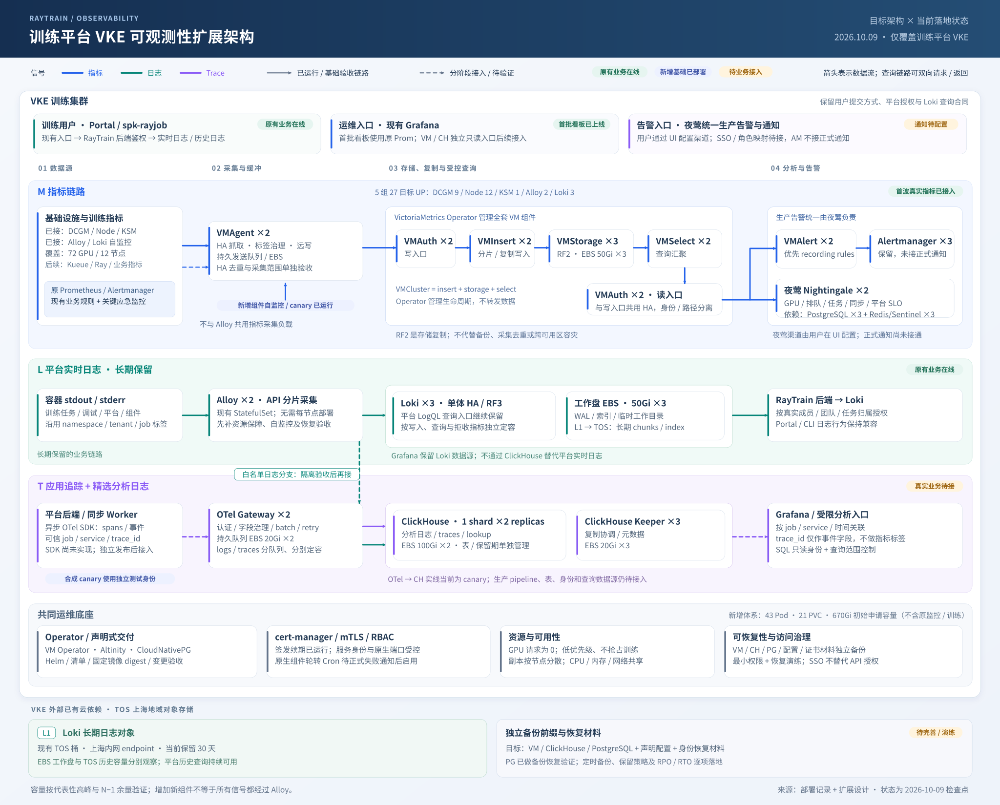

指标：首波真实目标已接入
DCGM / Node / KSM / Alloy / Loki 共 5 组 27 目标 UP，读回 72 GPU、12 节点。现有 Grafana 首批看板用原 Prom 数据源，22 项查询通过；原 Prom 89/89 目标正常。Kueue / Ray 深层指标和应用指标后续完善。
首波真实指标与看板已接入；保留平台日志，逐步扩展分析与追踪 · 2026-10-09

DCGM / Node / KSM / Alloy / Loki 共 5 组 27 目标 UP，读回 72 GPU、12 节点。现有 Grafana 首批看板用原 Prom 数据源，22 项查询通过；原 Prom 89/89 目标正常。Kueue / Ray 深层指标和应用指标后续完善。
Alloy 与 Loki 是长期业务链路。先补自监控、资源保障、端到端 canary 和恢复验收，再依据瓶颈扩容；不因引入新组件默认扩成 DaemonSet。
后端 / Worker SDK 尚未实现，正式 OTel / ClickHouse 管线、外部夜莺 UI 与 SSO 仍待接入。生产告警统一由夜莺处理，用户后续在 UI 配置渠道；VMAlert 优先 recording，AM 不接正式通知。